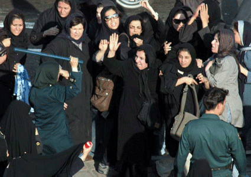

|
|

عکس منصور نصیری از تجمع مسالمت آمیزدر اعتراض به نقض حقوق زنان در قوانین، برنده جایزه کاوه گلستان شد
زنستان
شنبه6 آبان 1385
عکس منصور نصیری از تجمع بیست و دو خرداد ماه سال هشتاد و پنج در که در اعتراض به نقض حقوق زنان در قوانین ، در میدان هفت تیر برگزار شد، برنده جایزه تک عکس خبری سومین دوره جایزه عکاسی " کاوه گلستان" شد.

جایزه " کاوه گلستان" از سه سال پیش در پی کشته شدن این عکاس نام آشنای ایرانی درعراق ، هر سال برگزار شده و در سه بخش بهترین تک عکس خبری، بهترین گزارش تصویری و معرفی استعداد جوان جوایزی را به عکس های منتخب اهدا می کند.
در بیست و دو خردادهشتاد و پنج، نیروهای پلیس به تجمع مسالمت آمیز زنان حمله کرده و تعداد بسیاری را مضروب و مجروح و هفتاد نفر را نیز بازداشت کردند. نیروهای پلیس با عکاسان و خبرنگاران حاضر در محل نیز برخورد کرده و تعداد کمی از عکاسان موفق به ثبت لحظات این تجمع شدند .
هر ساله نمایشگاهی از عکس های منتخب " جایزه گلستان" در " خانه هنرمندان ایران" برپا می شد تا عکس های منتخب در معرض دید عموم قرار گیرد. اما امسال از برگزاری این نمایشگاه ممانعت به عمل آمده و وزارت فرهنگ و ارشاد اسلامی به مجموعه عکس های منتخب که به صورت کتاب چاپ می شود نیز مجوز چاپ نداده است.
در میان عکس های برگزیده، سه عکس دیگر از تجمع زنان در میدان هفت تیر نیز مشاهده می شود که از مجموعه عکس های آرش عاشوری نیا، عکاس دیگری که موفق به ثبت لحظه های این تجمع شده بود، برگزیده شده است.